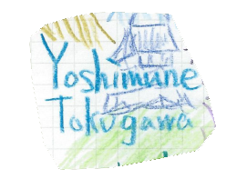
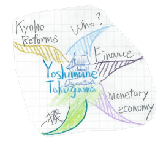
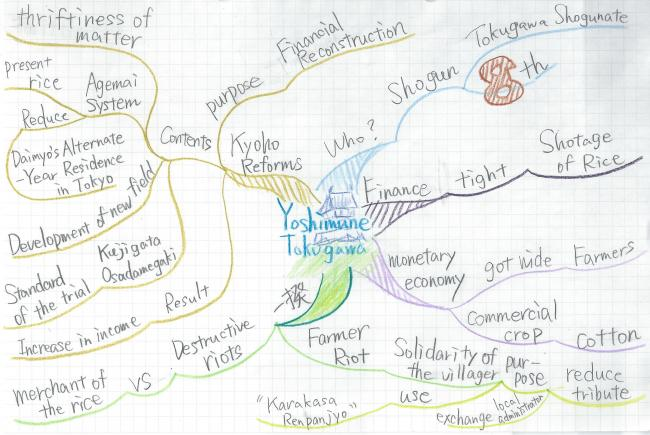
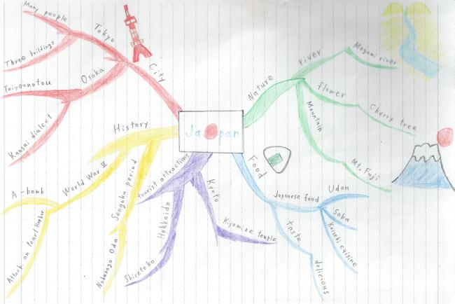
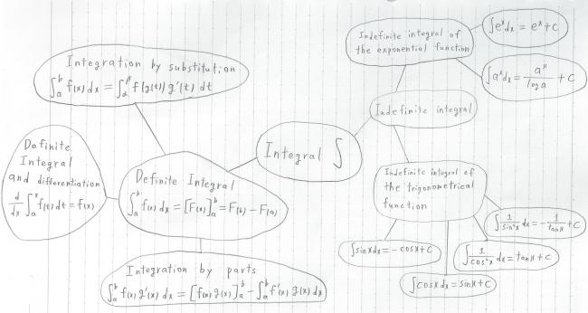
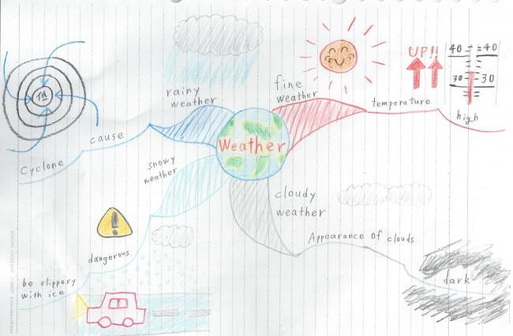

This page explains the actual method of utilizing MindMap.
MindMap is a very convenient thought tool, and there are various utilization methods. In this page, I show the example which utilized MindMap in the following cases.
・Memo of lecture contents
・Summary of the opinion that appeared by the talks in the group
・Creating a Schedule
In addition, I introduce a failure example and an improvement way on making MindMap.
Memo of lecture contents
- Let’s summarize the information on the board
-
Let’s think about a method to summarize the information about "the rule of Shogun Yoshimune TOKUGAWA" to be written on a lower blackboard in as mind map.By the real class, the teacher does not draw mind map on the blackboard.So I think that this exercise is effective.
◎Kyoho Reforms and Change of Society
Yoshimune Tokugawa→8th Shogun of Tokugawa Shogunate
・Kyoho Reforms
Shotage of Rice → Financial Difficulties
The year 1716 “Kyoho Reforms”
Financial Reconstruction Policy
1. Thriftiness of Matter
2. Agemai System→Let them present rice
Reduce Daimyo's Alternate-Year Residence
3. Development of new field
4. Kujigata Osadamegaki→Standard of the trial
→ Increase in income
・ Spread of Monetary Economy
A monetary economy got wide to farmers
→Commercial crop (ex.Cotton)
・Riot
18c 1． Farmer Riot
・Solidarity of the villager→Reduction of the tribute
→ Change of the local administrator
2. Destructive riots→performed for a merchant of the rice
Well, then I will draw MindMap in order of just what I explained it
- Draw ｃentral theme
-
At first write a theme in the center. “Yoshimune Tokugawa" will be suitable for the central theme because the blackboard says about he rule of Shogun Yoshimune TOKUGAWA. In this way, I drew the picture of a castle associated with a general. If you drew any picture, you will be able to open a drawer in memory easily when you read mind map again.
 - Divide it into a category and lengthen a branch
-
Generally speaking, the next step is write what you can associate with a central theme. However, I classify what is written on the blackboard in some categories because I convert what is written on the blackboard into mind map this time.
 - Lengthen a branch every category
-
Finally mind map is completion if you lengthen a branch every category and copy contents from the blackboard. In this way, if you write contents of board using Mindmap, It is easier to view than writing contents of board in a notebook because the contents of board divited some group.

Summary of the opinion that appeared by the talks in the group
- Let's summarize the opinion
-
Have you ever participated in any activity in the school? For example, I think the people belonging to a student council or executive committee at school festival or the athletic meet have ever participated in the meeting about those policies. In addition, I think that even if you does not belong to a student council or the executive committee, you have experienced what you summarize each opinion by group learning.
In such a case it is very hard to summarize the opinion of all the members properly. Even if you want time to summarize opinion, you cannot stop the talks. And even if you summarize opinion quickly, you miss an opinion or become hard to understand it when you review later.
However！
The Mindmap is very useful in such a case. I show the example which I summarized below the talks in the group by Mindmap .
As shown in the figure, When settle the talks in the group, write the matter a key role of the topic midmost (a figure "Japanese"). And you connect it like a chain and draw the opinion that came out according to how to draw Mindmap. Like a figure, As shown, I can easily group it according to a meaning. Thus, it becomes easy to look when I confirmed it later.
Creating a schedule
- Let's create a Schedule
-
How will a student participating in club activities or learning make a schedule? Recently students can manage a schedule with smartphones. Does everybody compile a plan by such a method, too? Or there may be the person who has never made a schedule.
Actually, the Mindmap is effective when you make schedule.If you write the schedules commonly, quantity increases and it becomes hard to understand and it may become hard to watch it. But, you can compile various plans with several pieces of paper neatly and are able to remember planned contents definitely if you make a schedule with Mindmap. Example which I planned a schedule with Mindmap is shown below.

When you draw a schedule in Mindmap, at first you draw it midmost to show it in the figure whether it is what time of schedule or what kind of schedule (in the figure, I write it about a plan of the second week of December). And you connect the schedule about the theme like a chain form from the center and draw it (in the figure, I write about the schedule of the Monday through Friday). I can compile the schedule of the week and the month with a piece of paper by drawing in this way, and it becomes easy to look again it.
In this way, we can use the Mindmap for various things. Would you like to use Mindmap?
A failure example and improvement example
- Mistake that beginners do well
-
I think that to see a page of how to describe Mindmap, there are the person who made it myself at once and the person who wants to make it. However, you cannot make use of a characteristic of the mind map or can mistake the style itself when actually you make it by oneself.
Therefore, in this page, I give a failure example of the Mindmap and give a method to improve a failure example. At first I show the first failure example in the following figures.
（This is the mind map which I gathered up about integral calculus to learn in high school students.）By the way, I showed the first failure example. Will you know where is wrong? Probably I think that the person watching finished Mindmap in other pages feels odd in this Mindmap. At first there is a point not to use the color for one of the reasons why the Mindmap of the upper figure fails. It is necessary for the Mindmap to give an vivid impression using basically various colors. Otherwise an impression of the Mindmap becomes little and it is not effective when you memorize.
As the error reason of the second, there is a point not to be used the image in a central theme and not to be used the image as a whole. As well as the first reason, because an impression becomes little, it becomes hard to memorize contents of the Mindmap. Therefore you had better draw the Mindmap using a lot of images. Rather you may draw it using a lot of images too much for you. It is important for Mindmap very much to use a lot of images.
As the error reason of the third, there is the point that a word and an expression are written in circle and circle connected circle by line. A sentence which you want to memorize and the expression are basically written above a line. When you use the figure as emphasis of the images, it is necessary to write a figure so that the content is clearer and emphasized. When you use circle of the same size for all matters like the Mindmap of the upper figure, it is not emphasized.
As the error reason of the fourth, there is the point that there are few blanks between each element. Because each word is written without a space in the upper figure, it becomes hard to watch it a little. This is disturbance when you memorize things. Therefore it is necessary to improve Mindmap to be a space between element and element.
The error reason of the fifth is the point that central line is thin or same as other lines. It is necessary that the line is drawn on the center as big as possible to emphasize that things drawn the center is main and important.
There is just so much else points that should be improved. However, I think these five points should be improved with priority. I think that these five points of failure is the mistakes that they do well when they draw it for the first time. However, it is very important five points in drawing Mindmap. So please be improved if you find such a mistake.
- Even if you look right…
-
Next, the second examples of wrong will be shown below.
Well, do you know where of this figure is wrong?
Seemingly I employ a lot of images and seem to be right in the Mindmap which overcame the most of the first failure example. However, I am worried about a certain thing. That means that there is little number of words associated with one word. For example, the word "temperature" is only associated with the word "fine weather". In addition, only the word "(Temperature) rises" is associated with the word "temperature".
In the Mindmap, you should associate many words. Because you leads to the improvement of a memory and the creativity, should draw the associated words as much as possible. For example, you can associate the words such as "reason" and "the feeling" with the word "fine weather" as well as the word "temperature". So you should connect those words into a chain form from the word "temperature".